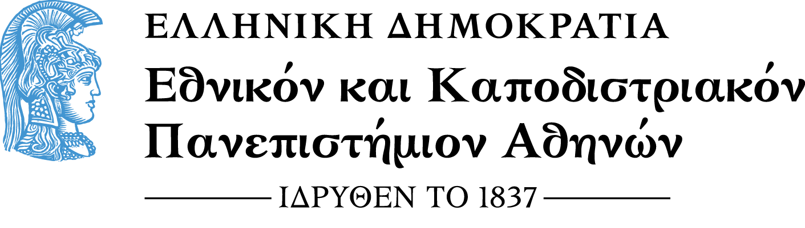
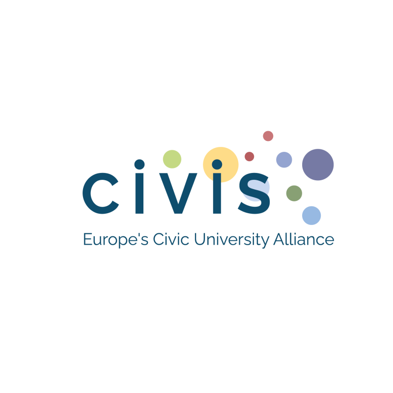

Bridging traditional philology with cutting-edge AI and NLP techniques.
April 20 – 23, 2026
| Time (EEST) | Monday 20/4 | Tuesday 21/4 | Wednesday 22/4 | Thursday 23/4 |
|---|---|---|---|---|
| 10:00 - 11:30 | Diachronic Linguistics Reimagined INikolaos Lavidas (Athens) | Verb-nominal collocationsM. I. Jimenez Martinez (Madrid) | Diachronic Linguistics Reimagined IINikolaos Lavidas (Athens) | Linguistics in the time of AIArtemij Keidan (Sapienza) |
NKUA
UAM
Tübingen
Sapienza
Bucharest
S. Chionidi, E. Plakoutsi (Athens)
For any inquiries regarding the CIVIS BIP Programme, please reach out to:
Nikolaos Lavidas
Associate Professor, NKUA

